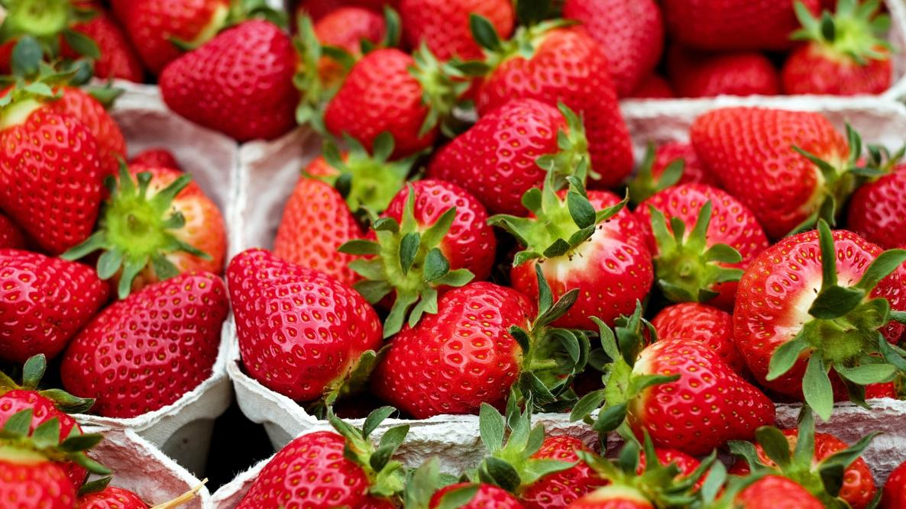
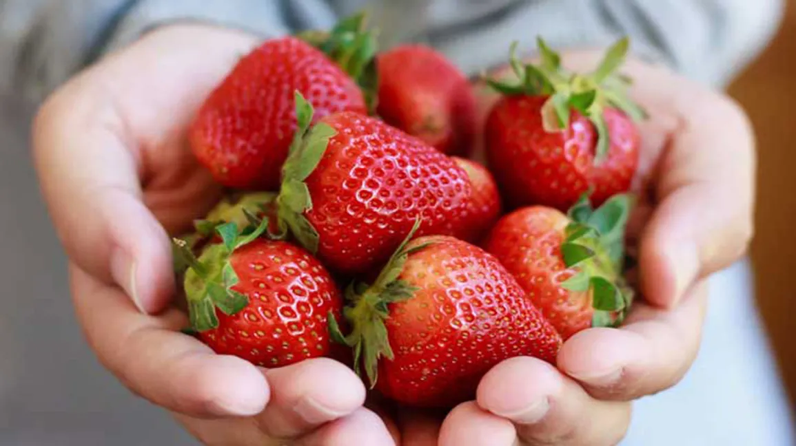
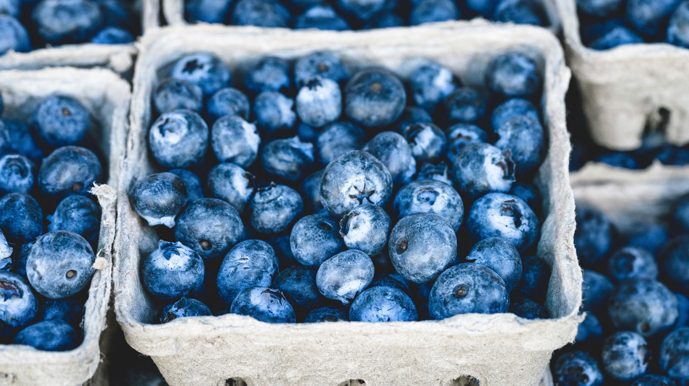
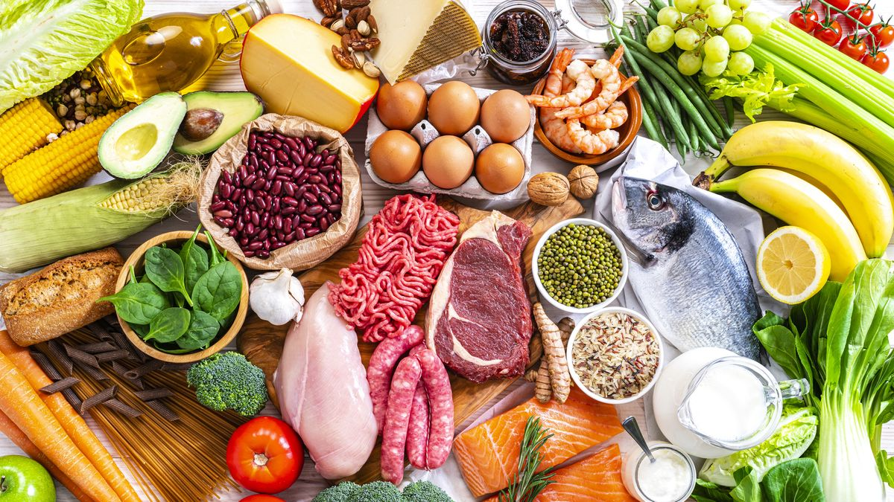

The Fruit Bowl
Sign Up To Become A Member!
Please enter a username Please enter a password Confirm PasswordWelcome To The Fruit Bowls's Information Page!

On this page are some of my favourite fruits! Fruits have multiple health benefits. Adding more fresh produce to your diet is highly recommended since fruits and vegetables are rich in vitamins, minerals, and antioxidants that are essential for maintaining good overall health, weight management, and even healthy weight loss. According to Jaclyn London, R.D., a nutrition consultant, including more fruits in your diet is one of the best ways to make nutritious food choices that can help boost your mood, reduce the risk of heart disease, obesity, and type 2 diabetes, and increase your overall lifespan. Fruits are also essential for supporting good digestion due to their high fibre content, promoting strong immunity, proper hydration, and energy levels. However, only 10% of Americans consume enough fruits to meet their daily recommended intake, which is about 1½ to 2 cups daily, according to the
Centers for Disease Control and Prevention.A simple way to increase your fruit and vegetable intake is to eat a variety of colourful fruits each day. You can group fruits by their pigment, such as green, yellow, orange, red, and purple, to ensure you consume a variety of fruits. Even if you're already a fruit lover, try incorporating some unfamiliar fruits into your diet for added variety and benefits!
If you are a fruit lover like me, you are in the right place! I have put together some comprehensive information on my favourite fruits, along with a recipe finder that will help you discover some delectable recipes that feature those fruits. Whether you're looking for a light and refreshing summer snack or a sweet dessert to satisfy your sweet tooth, I've got you covered. If you click on the tabs, you can learn about the information for each fruit, their cultivation, and some delicious recipes featuring them. You'll also find some a trivia about each fruit that you can impress your friends with! Once you've read up on your favourite fruits, head over to the recipe finder section where you can browse throughrecipes that feature those fruits. The recipe finder is easy to use and will help you narrow down your search. You'll find everything from smoothies and salads to pies and tarts, so no matter what you're in the mood for, you're sure to find something that suits your taste buds. So, what are you waiting for? Start exploring and discover some new and exciting ways to incorporate your favourite fruits into your diet!
Strawberries
About
The garden strawberry is a widely grown hybrid species of the genus Fragaria, collectively known as the strawberries, which are cultivated worldwide for their fruit. The fruit is widely appreciated for its characteristic aroma, bright red color, juicy texture, and sweetness. It is consumed in large quantities, either fresh or in such prepared foods as jam, juice, pies, ice cream, milkshakes, and chocolates. Artificial strawberry flavorings and aromas are also widely used in products such as candy, soap, lip gloss, perfume, and many others. The garden strawberry was first bred in Brittany, France, in the 1750s via a cross of Fragaria virginiana from eastern North America and Fragaria chiloensis, which was brought from Chile by Amédée-François Frézier in 1714.Cultivars of Fragaria × ananassa have replaced, in commercial production, the woodland strawberry, which was the first strawberry species cultivated in the early 17th century.From a botanical point of view, the strawberry is not a berry but an aggregate accessory fruit, meaning that the fleshy part is derived not from the plant's ovaries but from the receptacle that holds the ovaries. Each apparent "seed"on the outside of the fruit is actually one of the ovaries of the flower, with a seed inside it.
Cultivation
Strawberries produce flowers that in turn bear fruit. The yellow center of each little flower is actually where the plant is pollinated. Once pollinated, the flower petals fall off and the yellow center starts to grow and becomes a strawberry. Each strawberry branch (also known as “flower truss”) has three to eight flowers if you’re really lucky. Strawberries produce flowers that in turn bear fruit. The yellow center of each little flower is actually where the plant is pollinated. Once pollinated, the flower petals fall off and the yellow center starts to grow and becomes a strawberry. Each strawberry branch (also known as “flower truss”) has three to eight flowers if you’re really lucky. The king fruit is the first berry to grow and will be the first one that farmers pick. It is also the biggest berry. People in Ontario often note that strawberry size can really vary. Unlike imported berries, these strawberries actually change size as they develop. They put the most energy into the first berry (the king berry) and so that strawberry is going to be the biggest but the berries do get a bit smaller as the season goes on. As pickers go through, they sort the strawberries into packages by size.
Recipes
Strawberries are one of the most luscious and versatile fruits that can be used in a wide range of dishes. From sweet to savoury, they can be incorporated into so many recipes, and the results are always delicious. With their juicy texture and sweet-tart flavour, strawberries can be used in cakes, pies, tarts, salads, cocktails, and more. Some of the most mouth-watering recipes that can be made with strawberries include Strawberry-Almond Crumble Pie, Brandied Strawberry Shortcakes, Strawberry Hand Pies, Strawberry Cheesecake, Strawberry Ice Cream, and Strawberry Jam. Whether you're looking for a dessert to impress your guests or a refreshing beverage to cool off on a hot summer day, strawberries are always a great choice. So why not try incorporating this versatile fruit into your next meal and see how it transforms the dish into something truly special?
Strawberry Quiz
Question 1: What color are ripe strawberries?

Question 2: What is a notable nutrient found in strawberries?
Question 3: How would you describe the taste of strawberries?
Question 4: What color are strawberries known for?
Mangos

About
Mango (Mangifera indica L.) is not only one of the most important and popular fruits in Bangladesh, but it is also a beloved fruit worldwide. It is often referred to as the "king of fruits" because of its excellent overall eating characteristics, sweet and tangy flavour, and versatility in culinary applications. Mango is consumed as a fresh fruit, in frozen, preserved or dried forms, or is processed into juices, purees, chutneys, and pickles. Ripe mangoes are best eaten as fresh fruit, usually as a dessert, but they are also used in the production of confectionery, ice cream, and bakery products. In addition to its delicious taste, mango contains a variety of phytochemicals and nutrients that make it a highly nutritious fruit. The fruit pulp is high in dietary fibre, Vitamin C, provitamin A, carotenoids, and diverse polyphenols. The dietary fibre in mango helps in digestive function, while Vitamin C boosts the immune system and helps maintain healthy skin and hair. Provitamin A and carotenoids are essential for maintaining healthy eyesight, while polyphenols are known to have antioxidant properties and help protect the body against the harmful effects of free radicals. In Bangladesh, mango is not only a popular fruit, but it is also an important part of the country's culture and tradition. The country is known for producing some of the best mangoes in the world, with over 250 varieties grown across the country. The mango season in Bangladesh starts in May and lasts till September, during which time the markets are flooded with different types of mangoes. Overall, mango is a delicious and highly nutritious fruit that is enjoyed by people of all ages worldwide. Whether eaten fresh or used in various culinary applications, mango is sure to add a burst of flavour and nutrition to any meal.
Cultivation
Mango trees are a favourite among gardeners and farmers alike, as they are relatively easy to grow and produce delicious fruit. If you're interested in growing your mango trees, there are a few different methods you can try. One common way to start a mango tree is by planting a seed or purchasing a grafted nursery tree. Another option is to take cuttings from an existing tree and root them yourself. While cuttings may not always result in a strong root system, they are a cost-effective way to propagate new trees. Once your mango tree is established, it's important to know when to harvest the fruit. Mangoes are typically harvested by hand-picking when they reach maturity, using long poles with a hook or basket attached to gather the fruit from the tree. The timing of harvest will depend on the variety of mangoes and local conditions, with growers aiming for optimal ripeness. After the fruit is harvested, it goes through a sorting, cleaning, and packaging process to prepare it for distribution. In addition to being a tasty treat, mangoes are also packed with health benefits. They are rich in vitamins A and C, as well as potassium and fibre. So not only can you enjoy the delicious taste of fresh mangoes, but you can also feel good about incorporating them into your diet.
Recipes
Mango is undoubtedly one of the most beloved fruits across the globe. Known as the king of fruits, it is celebrated for its sweet, juicy, and tropical flavour that's hard to resist. But did you know that apart from being a delicious snack on its own, mangoes also make for some of the most exquisite and mouth-watering recipes that you can enjoy? From traditional Indian dishes to modern fusion recipes, there's no dearth of options when it comes to cooking with mangoes. Whether you're in the mood for something sweet, tangy, or spicy, there's a mango recipe out there that will tickle your taste buds. Some of the most popular mango recipes that you can try include Coconut-Mango-Lime Barfi, Mango Sticky Rice, Vanilla Layer Cake With Mango Curd, Sweet and Salty Mango Lassi, and much more. These recipes are not only delicious but also versatile, which means you can enjoy them as a dessert, breakfast, or even a snack. So next time you get your hands on some fresh and ripe mangoes, don't just stop eating them plain. Get creative, experiment with different recipes, and discover the endless possibilities of this tropical fruit. Who knows, you may just stumble upon your new favourite recipe!
Mango Quiz
Question 1: Which country is known for producing the Alphonso variety of mango?
Question 2: What vitamin is abundant in mangos and contributes to skin health?
Question 3: In which season do mangos typically ripen?
Question 4: What is the shape of a mango pit?
Kiwis
.webp)
About
Kiwi is a small, oval-shaped fruit with brown fuzzy skin and a bright green interior flesh that is dotted with tiny black seeds. Despite its diminutive size, kiwi fruit packs a lot of punch when it comes to flavour and nutrition. These fruits have a unique, tangy-sweet flavour that is both refreshing and invigorating. They are also an excellent source of vitamins C and K, potassium, fibre, and antioxidants. Originally known as the Chinese gooseberry, kiwi was first cultivated in northern China where it was primarily used for medicinal purposes. It wasn't until the early 20th century that kiwi began to spread from China to other parts of the world, including New Zealand, where it became a popular crop. New Zealand is now one of the world's leading producers of kiwi fruit. Kiwi fruit is incredibly versatile and can be enjoyed in a variety of ways. Some people prefer to eat kiwi fresh, slicing it in half and scooping out the flesh with a spoon. Others enjoy it in salads, smoothies, juices, or as a topping on yogurt or oatmeal. Kiwi is also commonly used in desserts such as cakes, tarts, and pies. Whether you're looking to add more nutrition to your diet or simply want to enjoy a delicious and refreshing fruit, kiwi is worth considering. So, next time you're at the grocery store, be sure to grab a few of these little green gems and add them to your cart!
Cultivation
Did you know that kiwi fruit is not actually native to New Zealand, as many people believe? In fact, kiwi fruit is native to China, where it was originally known as Chinese gooseberry. It wasn't until the 20th century that the fruit was brought to New Zealand and renamed kiwifruit, after the country's national bird, the kiwi. Kiwi fruit is a fascinating plant to grow. It grows on a vine and requires a horizontal wire trellis system for support. The vines are trained onto the trellis, which helps to keep the fruit off the ground and make harvesting easier. Each individual kiwi plant bears either male or female flowers, and to ensure proper production, one male vine must be planted to every 8 female vines. This ratio ensures that there is enough pollen to go around and that the female plants are properly pollinated. Interestingly, kiwifruit is not self-pollinating, which means that bees are required for proper pollination. When the bees visit the flowers, they transfer pollen from the male flowers to the female flowers, which allows the fruit to develop. Without bees, kiwi fruit production would be severely limited. In addition to being delicious, kiwi fruit is also packed with nutrients. It is high in vitamin C, vitamin K, and potassium, and is also a good source of dietary fiber. So not only is kiwifruit a fun plant to grow, it's also a healthy addition to your diet.
Recipes
If you're looking for a fresh and tasty addition to your meal plan, kiwi is a fantastic choice. This vibrant fruit is packed with vitamins and minerals, and can be used in a variety of delicious recipes. Some popular recipes that include kiwi are Apple Kiwi Smoothies, Kiwi Bread, Kiwi Chia Pudding, and much more! Kiwi can be used in both sweet and savory dishes, making it a versatile ingredient to have in your kitchen. With its bright green color and tangy flavor, kiwi is a great way to add a pop of color and flavor to your cooking. So why not try out some kiwi recipes today and experience the delicious taste for yourself?
Kiwi Quiz
Question 1: Which country is native to the kiwi fruit?
Question 2: What is the texture of a ripe kiwi's skin?
Question 3: What is the primary flavor of kiwi?
Question 4: How is a kiwi typically consumed - peeled or unpeeled?
Blueberries
About
Blueberries are a popular fruit that are loved by many for their plump, sweet and juicy flavor. They come in a variety of colors ranging from indigo to deep purple, and are considered to be a superfood due to their high nutrient content. Interestingly, wild blueberries are indigenous to North America and have been a part of the continent's ecosystem for more than 13,000 years. However, blueberries did not become a cultivated crop until the early 20th century when a New Jersey farmer's daughter teamed up with a botanist to cultivate and breed the fruit. The first blueberries were harvested in 1916, and over the next 50 years, there was a "blueberry boom" across America. Today, blueberries are grown in various parts of North America, with the continent producing approximately 1 billion pounds of blueberries each year. Apart from North America, blueberries are also cultivated in parts of South America, including Argentina, Chile, and Peru. They are a versatile fruit that can be used in a variety of recipes, from pies and muffins to smoothies and salads. With their sweet and tangy flavor, blueberries are a delicious and healthy addition to any diet.
Cultivation
Blueberries are a delicious and healthy fruit, packed with antioxidants and nutrients. These little berries grow on tall bushes that are usually planted in long rows in order to maximize their production. The process of growing blueberries is a long and meticulous one. Farmers must wait for 3-4 years after planting the young bush until it becomes mature and ready to be harvested. During this time, they need to ensure that the soil is well-drained and acidic, and that the plant receives plenty of water and sunlight. Once mature, the blueberry bush can continue to produce fruit for up to 30 years! That's a long time, and it's one of the reasons why blueberries are such a popular crop among farmers. However, it's important to note that the yield of the bush tends to decline after the first 10-12 years of growth, so farmers need to be careful about when to replant or remove old bushes. Another interesting fact about blueberry bushes is that they can grow up to 12 feet tall! That's taller than most people! However, most blueberry bushes top out at around six feet, which is still pretty impressive. In order to keep the bushes at a manageable height, farmers prune them regularly and use various techniques to promote healthy growth.All in all, blueberries are a fascinating crop that requires patience and care to grow successfully. But the end result is worth it – sweet and juicy berries that are beloved by people all over the world.
Recipes
Blueberries are not only a delicious snack, but they also make for some of the most delectable recipes. From mouth-watering pies to refreshing ice pops, there's no shortage of ways you can enjoy this flavorful fruit. For instance, you can try making a Star-Studded Blueberry Pie that's perfect for any occasion. Or if you're looking for something a bit more refreshing, you can whip up some Creamy Layered Blueberry Ice Pops that are sure to satisfy your cravings. Lemon Blueberry Biscuits are also a great way to start your day with a tasty and healthy treat. With so many options to choose from, you'll never run out of ideas for incorporating blueberries into your diet. So, get creative and start exploring all the different ways you can enjoy this delicious fruit!
Blueberry Quiz
Question 1: What color are ripe blueberries?
Question 2: What antioxidant is abundant in blueberries?
Question 3: How are blueberries commonly served in desserts?
Question 4: What is the typical size of a blueberry?
Tips
One simple way to enjoy more fruits is to make a fruit salad by combining different types of fruits in a bowl and tossing them together. You can also add some nuts, seeds, or a drizzle of honey for added flavour and nutrition. Smoothies are another great way to incorporate more fruits into your diet. Simply blend your favourite fruits with some milk or yogurt, and enjoy a refreshing and nutritious drink. If you have a sweet tooth, try making a fruit-based dessert such as a fruit tart, fruit sorbet, or grilled fruit skewers. These desserts are not only delicious but also nutritious and low in calories. Instead of reaching for a sugary snack, try snacking on some fresh fruits. Fruits like apples, bananas, and oranges are easy to carry and make a great on-the-go snack. If you're looking for a healthy breakfast option, try adding some fresh fruits to your oatmeal or cereal bowl. This will add some natural sweetness and a variety of nutrients to your breakfast. Fruits can also be used as a natural sweetener in recipes. For example, you can use mashed bananas or unsweetened applesauce instead of sugar in baking recipes. Remember to always wash your fruits before consuming them and to choose organic fruits whenever possible to avoid pesticides and chemicals.
Recipe Finder
Enter the name of a fruit to find a quick and delicious recipe!